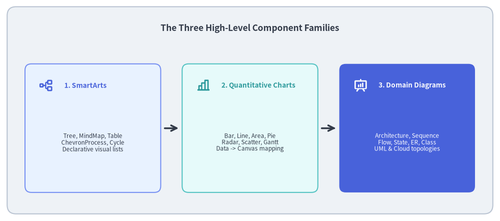
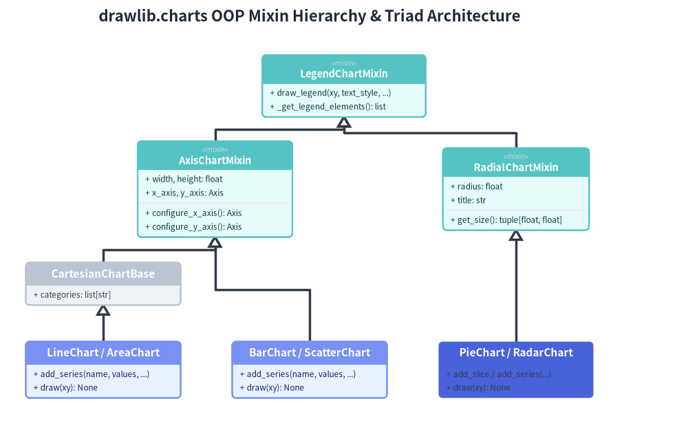
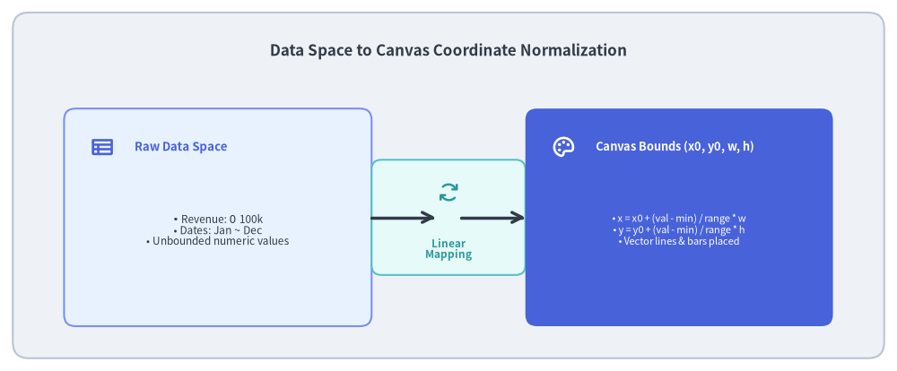

SmartArts, Charts & Diagrams Subsystems
Manual assembly of technical diagrams from raw primitives (rectangle, line, text) is tedious and error-prone. As systems scale, computing exact bounding boxes, alignment offsets, and arrow intersections by hand becomes unsustainable.
Drawlib addresses this complexity through three specialized high-level component families: SmartArts, Charts, and Diagrams.

Source Code
from drawlib.canvas import save, setup
from drawlib.icons import phosphor
from drawlib.lines import line
from drawlib.shapes import rectangle
from drawlib.styles import Styles
from drawlib.text import text
setup(width=140, height=62)
rectangle((70, 31), width=136, height=58, style=Styles.Neutral.patch(shape_r=2.5))
text(
(70, 54),
"The Three High-Level Component Families",
style=Styles.DarkBold.patch(text_size=12.5),
)
families = [
(26, "1. SmartArts", "Tree, MindMap, Table\nChevronProcess, Cycle\nDeclarative visual lists", phosphor.tree_structure, Styles.PrimaryNeutral, Styles.PrimaryBold),
(70, "2. Quantitative Charts", "Bar, Line, Area, Pie\nRadar, Scatter, Gantt\nData -> Canvas mapping", phosphor.chart_bar, Styles.SecondaryNeutral, Styles.SecondaryBold),
(114, "3. Domain Diagrams", "Architecture, Sequence\nFlow, State, ER, Class\nUML & Cloud topologies", phosphor.presentation_chart, Styles.PrimaryFlat, Styles.WhiteBold),
]
for x, title, desc, icon_func, card_style, icon_style in families:
rectangle((x, 26), width=38, height=36, style=card_style.patch(shape_r=1.8))
icon_func((x - 13, 38), width=4.0, style=icon_style)
text((x - 8, 38), title, style=icon_style.patch(halign="left", text_size=9.8))
sub_style = Styles.White if card_style == Styles.PrimaryFlat else Styles.Dark
text((x, 22), desc, style=sub_style.patch(text_size=8.5))
line((46, 26), (50, 26), arrow_head="->", style=Styles.DarkBold)
line((90, 26), (94, 26), arrow_head="->", style=Styles.DarkBold)
save()
1. Concept: Declarative Bounding Boxes (x0, y0, w, h)
Unlike low-level primitives that center around (cx, cy), all high-level components accept a bottom-left bounding anchor (x0, y0) alongside total bounding dimensions width and height:
# Declarative high-level component invocation
chevron_process(
(10, 20), width=80, height=18,
items=["Requirements", "Design", "Implementation", "Verification"],
)
Within this bounded rectangle $[x_0, x_0 + w] \times [y_0, y_0 + h]$, the component's internal layout engine:
- Automatically calculates spacing, paddings, and element widths.
- Proportionally scales text labels and icons to fit available space.
- Renders background cards, connecting arrows, and labels in a single deterministic pass.
2. Positioning: Component Subsystem Breakdown
2.1. drawlib.smartarts — Structured Visual Lists & Composite Models
SmartArts translate structured data into polished, auto-aligned graphics using an Item (BaseModel) + Container composite architecture:
TreeNode: Computes multi-level recursive tree hierarchies, routing orthogonal connecting lines between parent and child nodes.MindMapNode: An orthogonal 4-cardinal-direction branching tree that distributes concepts along the North, South, East, and West axes using right-angled fork lines and intermediate routing junctions.ChevronProcess&ChevronItem: Linear stages with interlocking chevron arrows and optional sub-labels.GridLayout&GridItem: Matrix layouts with cell-aligned cards and responsive horizontal/vertical item distributions.Table: Column-aligned tabular data with automatic text wrapping, custom headers, and alternating row fills.SourceCode: Tokenizes source code via Pygments and renders vector text glyphs on the canvas with language-aware syntax highlighting andSourceCodeStyles.GeoMap: Spherical geographic projection and GeoJSON polygon clipping engine for rendering country and regional maps in pure vector form.
2.2. drawlib.charts — OOP Mixin Tree & The Triad Architecture
Unlike heavy scientific plotting packages that generate axes and tick marks across arbitrary pixel dimensions, Drawlib's chart engine decomposes chart generation into a Triad Architecture:
- Container / Builder: Configures axes, titles, dimensions, and legends (
BarChart,LineChart,PieChart, etc.). - Data Series / Items: Strongly-typed value containers (
Series,Slice,Point,Item). - Procedural Renderers: Dedicated geometry calculation and rendering functions (
_renderer.py).
The container classes follow a strict object-oriented mixin inheritance tree:

Source Code
from drawlib.canvas import save, setup
from drawlib.diagrams.class_diagram import ClassDiagram, ClassNode
from drawlib.styles import Styles
setup(width=160, height=100)
cd = ClassDiagram(
node_style=Styles.Neutral,
edge_style=Styles.DarkBold,
edge_text_style=Styles.Dark,
title="drawlib.charts OOP Mixin Hierarchy & Triad Architecture",
)
# Root Mixin
legend_mixin = cd.add(ClassNode(name="LegendChartMixin", stereotype="mixin", width=38.0, style=Styles.SecondaryNeutral), xy=(80.0, 80.0))
legend_mixin.add_method("draw_legend", params="xy, text_style, ...")
legend_mixin.add_method("_get_legend_elements", return_type="list")
# Intermediate Mixins (Row 2)
axis_mixin = cd.add(ClassNode(name="AxisChartMixin", stereotype="mixin", width=36.0, style=Styles.SecondaryNeutral), xy=(50.0, 56.0))
axis_mixin.add_attribute("width, height: float")
axis_mixin.add_attribute("x_axis, y_axis: Axis")
axis_mixin.add_method("configure_x_axis", return_type="Axis")
axis_mixin.add_method("configure_y_axis", return_type="Axis")
radial_mixin = cd.add(ClassNode(name="RadialChartMixin", stereotype="mixin", width=34.0, style=Styles.SecondaryNeutral), xy=(120.0, 56.0))
radial_mixin.add_attribute("radius: float")
radial_mixin.add_attribute("title: str")
radial_mixin.add_method("get_size", return_type="tuple[float, float]")
# Cartesian Base (Row 3)
cartesian_base = cd.add(ClassNode(name="CartesianChartBase", width=36.0), xy=(24.0, 34.0))
cartesian_base.add_attribute("categories: list[str]")
# Concrete Charts (Row 4)
line_chart = cd.add(ClassNode(name="LineChart / AreaChart", width=36.0, style=Styles.PrimaryNeutral), xy=(24.0, 14.0))
line_chart.add_method("add_series", params="name, values, ...")
line_chart.add_method("draw", params="xy", return_type="None")
bar_chart = cd.add(ClassNode(name="BarChart / ScatterChart", width=36.0, style=Styles.PrimaryNeutral), xy=(72.0, 14.0))
bar_chart.add_method("add_series", params="name, values, ...")
bar_chart.add_method("draw", params="xy", return_type="None")
radial_chart = cd.add(ClassNode(name="PieChart / RadarChart", width=36.0, style=Styles.PrimaryFlat), xy=(120.0, 14.0))
radial_chart.add_method("add_slice / add_series", params="...")
radial_chart.add_method("draw", params="xy", return_type="None")
# Connections
cd.connect(axis_mixin, legend_mixin, "inheritance", start_side="top", end_side="bottom")
cd.connect(radial_mixin, legend_mixin, "inheritance", start_side="top", end_side="bottom")
cd.connect(cartesian_base, axis_mixin, "inheritance", start_side="top", end_side="bottom")
cd.connect(line_chart, cartesian_base, "inheritance", start_side="top", end_side="bottom")
cd.connect(bar_chart, axis_mixin, "inheritance", start_side="top", end_side="bottom")
cd.connect(radial_chart, radial_mixin, "inheritance", start_side="top", end_side="bottom")
cd.draw(xy=(0.0, 0.0))
save()
Coordinate Normalization Pipeline
Data arrays are mapped directly into Cartesian canvas units:

Source Code
from drawlib.canvas import save, setup
from drawlib.icons import phosphor
from drawlib.lines import line
from drawlib.shapes import rectangle
from drawlib.styles import Styles
from drawlib.text import text
setup(width=140, height=58)
rectangle((70, 29), width=136, height=54, style=Styles.Neutral.patch(shape_r=2.5))
text(
(70, 50),
"Data Space to Canvas Coordinate Normalization",
style=Styles.DarkBold.patch(text_size=12.2),
)
# Left: Data Domain
rectangle((34, 24), width=48, height=34, style=Styles.PrimaryNeutral.patch(shape_r=1.8))
phosphor.table((16, 35), width=3.8, style=Styles.PrimaryBold)
text((21, 35), "Raw Data Space", style=Styles.PrimaryBold.patch(halign="left", text_size=9.5))
text(
(34, 22),
"• Revenue: $0 ~ $100k\n• Dates: Jan ~ Dec\n• Unbounded numeric values",
style=Styles.Dark.patch(text_size=8.5),
)
# Center: Normalization Transform
rectangle((70, 24), width=24, height=18, style=Styles.SecondaryNeutral.patch(shape_r=1.5))
phosphor.arrows_clockwise((70, 28), width=3.6, style=Styles.SecondaryBold)
text((70, 19), "Linear\nMapping", style=Styles.SecondaryBold.patch(text_size=8.5))
line((58, 24), (68, 24), arrow_head="->", style=Styles.DarkBold)
line((72, 24), (82, 24), arrow_head="->", style=Styles.DarkBold)
# Right: Canvas Cartesian Space
rectangle((106, 24), width=48, height=34, style=Styles.PrimaryFlat.patch(shape_r=1.8))
phosphor.palette((88, 35), width=3.8, style=Styles.WhiteBold)
text((93, 35), "Canvas Bounds (x0, y0, w, h)", style=Styles.WhiteBold.patch(halign="left", text_size=9.2))
text(
(106, 22),
"• x = x0 + (val - min) / range * w\n• y = y0 + (val - min) / range * h\n• Vector lines & bars placed",
style=Styles.White.patch(text_size=8.0),
)
save()
- Data arrays are normalized: $$x_{\text{canvas}} = x_0 + \frac{x_{\text{val}} - x_{\text{min}}}{x_{\text{max}} - x_{\text{min}}} \times w$$ $$y_{\text{canvas}} = y_0 + \frac{y_{\text{val}} - y_{\text{min}}}{y_{\text{max}} - y_{\text{min}}} \times h$$
2.3. drawlib.diagrams — Technical & UML Models
Provides ready-to-use software engineering visualizations structured into object-oriented node models:
sequence: Client/server lifelines, synchronous calls, async responses, and loop activations.flow: Decision trees built on theFlowNodebase class (Process,Decision,Start,End,Data) with automatic orthogonal routing.state: Finite state machines powered byStateNodeBase(State,InitialState,FinalState,ChoiceState,ForkJoinState) with self-referential arcs and transition labels.er: Entity-relationship models with primary/foreign key attributes and cardinality notations (1:1,1:N,M:N).class_diagram: UML class boxes (ClassDiagram,ClassNode) with attribute and method compartments and standard UML connectors (inheritance,composition,aggregation,dependency).- Polymorphic Icon Dispatch: Uses
draw_diagram_iconto seamlessly embed Phosphor, FontAwesome, or GCP icons into diagram headers and node badges.
3. Details: Layout Mechanics & Style Cascading
3.1. Proportional Font & Margin Calculation
When a user sets width=80 and height=20 on a SmartArt component, child elements dynamically adjust:
- Box margins are computed as a percentage of total element width ($m = 0.05 \times w_{\text{item}}$).
- Font sizes dynamically scale within safe typographic bounds ($9.5 \le \text{text_size} \le 13.0$).
- If text exceeds the allowable width, words automatically wrap or truncate based on configured overflow policies.
3.2. Vector Arrow Head Calculation
In sequence and flow diagrams, arrow heads are drawn using geometric projections:
- Given start point $P_1 = (x_1, y_1)$ and end point $P_2 = (x_2, y_2)$, the direction angle is: $$\theta = \text{atan2}(y_2 - y_1, x_2 - x_1)$$
- Arrow wings are projected back at angles $\theta \pm 150^\circ$, ensuring sharp arrowheads regardless of canvas aspect ratio.
Next, explore the declarative graph auto-layout engine in Graph Auto-Layout.